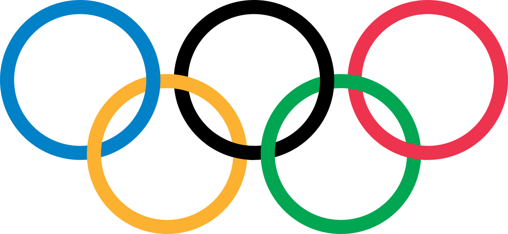

Olympics

Figure skating has been an Olympic sport since the 1908 Summer Olympics. It wasn’t until 1924 that the sport moved to the Winter Games where it has remained one of the Olympics most popular events.
Perhaps it’s the thought of these athletes spending years perfecting their sport in order to get the chance to spend a few minutes competing with the best competitors around the world that makes it so addictive. Perhaps it's also a little bit of national pride, hoping that the skaters representing your country win gold and stand on top the podium while your national anthem is played for the world to see. Or perhaps it's just the skill and quality of the performance that these athletes can put forward under so much pressure that glues us to our tvs.
No matter why you watch the Olympics, if you’re a Canadian, we have had more than our share of winners.
Overall, Canadian have won more than 551 Olympic medals which breaks down as follows:
Gold: 148
Silver: 182
Bronze: 221
In figure skating, Canada has won 29 medals.
Gold: 6
Silver: 11
Bronze: 12
Bejing 2022 Olympics
At the 2022 Beijing, China Olympics, Canada set a national record with the most medals it ever won in an Olympic games.
There were a total of 26 medals won including: 4 Gold, 8 Silver and 14 Bronze.
Sadly, Canada did not win any medals for figure skating at the 2022 Olympics, but the winners listed below put on quite a show.
Results
| Section | Gold | Silver | Bronze |
|---|---|---|---|
| Men Single | Nathan Chen | Yuma Kagiyama | Shoma Uno |
| Female Single | Anna Shcherbakova | Alexandra Trusova | Kaori Sakamoto |
| Ice Dance | Cizeron / Papadakis | Katsalapov / Sinitsina | Hubbell / Donohue |
| Pair | Han / Sui | Tarasova / Morozov | Mishina / Galliamov |
The next Winter Olympic Games are scheduled to take place in Italy in 2026.
Will Canadian ice dancers Piper Giles and Paul Poirier or Laurence Fournier-Beaudry and Nikolai Soerensen (currently ranked 4th and 5th in the world) or pair skaters Deanna Stellato-Dudek and Maxime Deschamps (currently ranked 6th in the world) win a spot on the Olympic medal podium?
I certainly hope these talented Canadians will perform well but either way, I know I'll be glued to my tv cheering the Canadian skaters on. Will you be watching too?